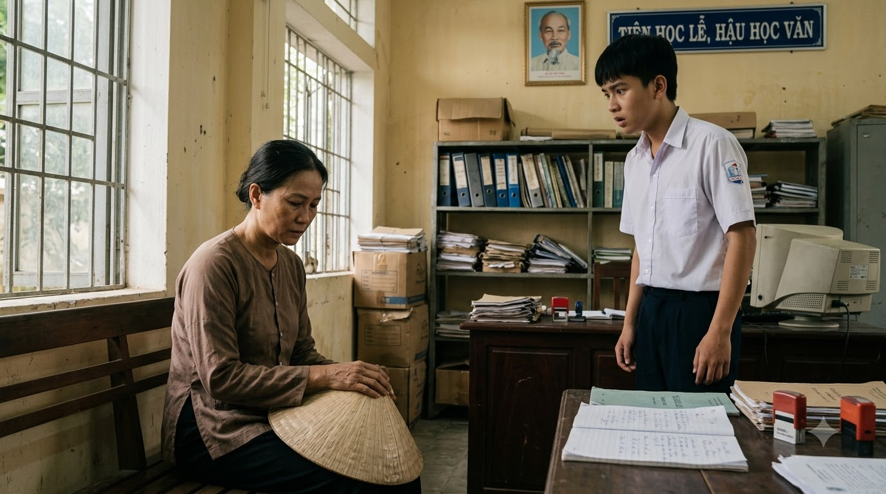
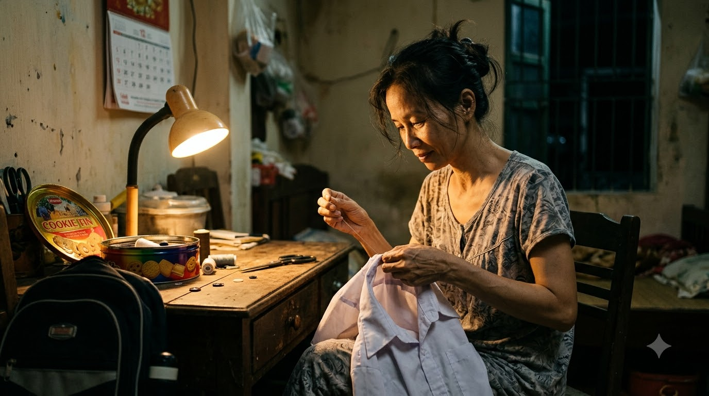
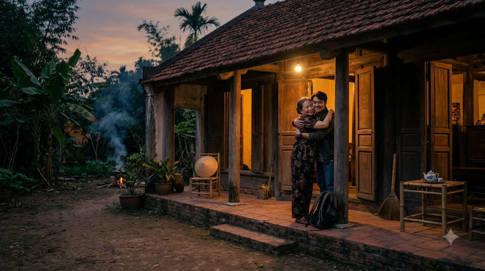

NẺO VỀ CỦA NHỮNG
ĐỨA TRẺ LẠC LỐI
Từ những tháng ngày ngông nghênh lạc bước đến giọt nước mắt thức tỉnh trước đôi dép tổ ong lấm bùn của mẹ.
Tại lớp 10A5, Nam luôn là cái tên khiến các thầy cô phải đau đầu. Với mái tóc nhuộm màu nổi loạn, chiếc áo đồng phục chưa bao giờ cài đủ cúc, Nam dành phần lớn thời gian ở quán internet hơn là trên giảng đường.
Những lời nhắc nhở của thầy cô hay giọt nước mắt của mẹ dường như chỉ làm dày thêm cái vỏ bọc bất cần của cậu. Nam luôn tự hào về sự "ngông nghênh" của mình, cho đến một buổi chiều định mệnh.

Hôm đó, vì mải mê với những trận game và mâu thuẫn ngoài phố, Nam bị gọi lên văn phòng nhà trường để nhận quyết định đình chỉ học tập. Khi Nam chuẩn bị buông những lời thách thức cuối cùng, cánh cửa hé mở. Cậu khựng lại khi thấy mẹ bước vào, dáng vẻ khắc khổ và run rẩy.
Bà lặng lẽ cúi đầu trước thầy hiệu trưởng, miệng không ngừng van nài cho con một cơ hội cuối cùng. Nam nhìn xuống đôi dép tổ ong cũ nát bám đầy bùn đất của mẹ, sự ngạo mạn bỗng chốc vỡ vụn, thay bằng nỗi xấu hổ và hối hận trào dâng.

Đêm đó, nhìn mẹ ngồi lặng lẽ khâu lại chiếc áo sứt chỉ dưới ánh đèn khuya, Nam đã thức trắng. Cậu nhận ra rằng những lần mình "thể hiện" bản thân chỉ là sự ích kỷ đang bóp nghẹt đôi vai gầy của mẹ.
Sáng hôm sau, Nam xin lỗi thầy cô, tự tay nhuộm lại mái tóc đen và bắt đầu những chuỗi ngày miệt mài bên trang sách. Cậu học trò ngỗ ngược ngày nào giờ đây luôn là người đến lớp sớm nhất, sẵn sàng giúp đỡ bạn bè.
Mười năm sau, Nam trở về trường cũ trong bộ vest lịch lãm với tư cách là một doanh nhân thành đạt, mang theo một quỹ học bổng dành cho những học sinh có hoàn cảnh khó khăn để đền đáp công ơn thầy cô.
Đứng trên bục giảng, nhìn những gương mặt trẻ thơ, Nam xúc động chia sẻ: "Mỗi chúng ta đều có quyền sai lầm, nhưng chúng ta không có quyền bỏ mặc bản thân mình trong bóng tối."
Câu chuyện về sự thức tỉnh của Nam đã trở thành một bài học vô giá, truyền động lực mạnh mẽ cho biết bao thế hệ học trò trên hành trình hoàn thiện bản thân và hướng tới một ngày mai tươi sáng.

Không bao giờ là quá muộn để quay đầu, chỉ cần ta đủ dũng cảm để đối diện với lỗi lầm và chọn lấy một con đường đúng đắn để vươn lên.
NẺO VỀ CỦA NHỮNG
ĐỨA TRẺ LẠC LỐI
“Đằng sau mỗi đứa trẻ lạc lối luôn cần một vòng tay bao dung và một cơ hội để quay về. Khi biết thương lấy giọt nước mắt của mẹ, con đường trưởng thành sẽ tự khắc mở ra.”